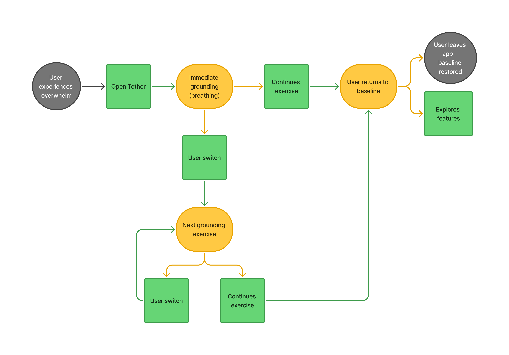

Process for Tether
Research
Design Tensions
1. Learning user preferences requires interaction, but overwhelmed users cannot tolerate it.
2. Users need fast relief, but identifying the right method may create tension.
3. Remove decision-making to reduce cognitive load without removing control.
4. Enabling emotional expression and connection and maintain privacy and safety.
1. Learning user preferences requires interaction, but overwhelmed users cannot tolerate it.
2. Users need fast relief, but identifying the right method may create tension.
3. Remove decision-making to reduce cognitive load without removing control.
4. Enabling emotional expression and connection and maintain privacy and safety.
Discovery
User Survey
User Survey
I surveyed 10 people, here's what I found:
Biggest Insights:
1. Overwhelmed people can't identify what they need. The system needs personalization without effort.
2. Most regulation takes 1-5 minutes. Speed is non-negotiable.
3. Same sensory input regulates one person and dysregulates another. Control and escape are essential.
I surveyed 10 people, here's what I found:
Biggest Insights:
1. Overwhelmed people can't identify what they need. The system needs personalization without effort.
2. Most regulation takes 1-5 minutes. Speed is non-negotiable.
3. Same sensory input regulates one person and dysregulates another. Control and escape are essential.
Competitive Analysis
Competitive Analysis
4 popular grounding apps, 1 scoring rubric, I found the same issues across them.
Across all apps, these themes emerged:
1. Failing to adapt to individual user needs.
2. Adding cognitive load when users are least able to process it.
3. Speed to relief is inconsistent, often delayed with multiple steps.
4. The apps can feel genreric and create a one-size-fits- all experience.
4 popular grounding apps, 1 scoring rubric, I found the same issues across them.
Across all apps, these themes emerged:
1. Failing to adapt to individual user needs.
2. Adding cognitive load when users are least able to process it.
3. Speed to relief is inconsistent, often delayed with multiple steps.
4. The apps can feel genreric and create a one-size-fits- all experience.
See full research details in Notion
What the Research Told Me
Clearing the design tensions:
1. The system needs to start helping immediately without asking users what they need.
2. Switching between methods needs to be fast and not interrupt their progress.
3. Users need to be able to step in, change, or stop what’s happening at any time.
4. Full control over expression and information.
Clearing the design tensions:
1. The system needs to start helping immediately without asking users what they need.
2. Switching between methods needs to be fast and not interrupt their progress.
3. Users need to be able to step in, change, or stop what’s happening at any time.
4. Full control over expression and information.
So..
How might we create an emotionally safe experience that adapts to each user in real time without adding cognitive load while maintaining autonomy?
Inside My Design Thinking
Sketches and Wireframes
Screens come after the system is understood. Before a single wireframe, I needed to know exactly how a dysregulated person moves from overwhelm to baseline and what the system does at each step without asking them anything.
Screens come after the system is understood. Before a single wireframe, I needed to know exactly how a dysregulated person moves from overwhelm to baseline and what the system does at each step without asking them anything.
User Flow
User Flow
Mapping the core interaction flow with these key decisions:
1. Immediate start
2. No decision required at entry
3. Users can switch or exit at any time, maintaining control
4. System learns through behavior, not input
Mapping the core interaction flow with these key decisions:
1. Immediate start
2. No decision required at entry
3. Users can switch or exit at any time, maintaining control
4. System learns through behavior, not input

Current Evolution
System first. Screens next. The foundation is set.
Onboarding is where the system starts learning. No clinical language, no forced decisions, just a few questions that begin to build your profile in the background.
Stay tuned...